Winder Turbine
October 2024 - December 2024
- Optimized turbine blade efficiency and tower rigidity through SolidWorks modeling and FEA simulation.
- Fabricated and tested a physical prototype using additive manufacturing.
- Facilitated and led the team, organizing members and dividing the project into clear tasks.
Collaborators
Wind Turbine Project Report
Section I: Project Summary
In a world where renewable energy is in high demand, wind turbines have become a safe and reliable resource that companies and corporations have heavily invested in to reduce reliance on fossil fuels. This project highlights the feasibility of small-scale wind turbine fabrication using modern technologies like 3D printing, SolidWorks CAD modeling, and data analysis. The primary objective was to meet design requirements for power output, stiffness, and weight while providing an opportunity to enhance CAD and engineering skills at a college level.
The turbine was designed with dimensions of 12 inches by 12 inches at the base and a height of 16 inches, with a maximum volume of 17 in³. The rotor blades were designed to fit an area of 6.0 in² - limiting the blade length to 3.0 inches from the tip - where our group used the NACA 4412 airfoil profile in hopes to maximize lift and minimize drag. During testing, the turbine successfully met all project requirements, achieving a peak power output of 1.209 W under wind conditions of 25 mph, a stiffness of 17.3 N/mm, and a total weight of 303.1 g. Although our team faced setbacks in how we expected our wind turbine to maximize its efficiency, this gap presents opportunities for future improvements.
The project exemplifies how engineers design, manufacture, and collaborate to address real-world challenges. By utilizing advanced tools and working collaboratively, our team gained valuable insights into engineering processes, preparing us for future projects. Successfully meeting the design objectives while identifying areas for growth highlights the potential for engineering students to contribute to technological innovation and sustainable energy solutions.
Section II: Table of Contents
| Section #: | Topic: |
|---|---|
| Cover Page: | |
| Section I: | Project Summary: |
| Section II: | Table of Contents: |
| Section III: | Introduction: |
| Section IV: | Design Process: |
| Section V: | Testing and Results: |
| Section VI: | Conclusions: |
| Section VII: | Recommendations for Future Work: |
| Section VIII: | References: |
Section III: Project Introduction
Section III.I: Introduction
This project aims to design, fabricate, and test a horizontal-axis wind turbine - encompassing both the blades and the support tower - to meet specific performance targets in power output, structural stiffness, and overall weight. We aim to merge practical engineering with broader principles that make wind energy an appealing and fast-growing renewable resource. Wind power’s allure lies in its ability to generate electricity without greenhouse gas emissions and its economic incentives, technological advancements, and the research that informs next-generation turbine designs.
Around the world, wind energy has evolved into an increasingly competitive and reliable source of electricity. As wind passes over a turbine’s precisely shaped blades, it is converted into kinetic energy and then into electrical power (Wind Energy Technologies Office, 2024). Over recent decades, turbine materials, blade aerodynamics, and energy capture efficiency improvements have driven down costs. At the same time, supportive government policies have accelerated large-scale adoption. By 2022, wind energy in the United States produced about 434.81 billion kilowatt-hours, representing roughly 10.25% of the country’s total electricity generation (Electricity Generation from Wind, 2023).
The benefits of wind energy reach far beyond meeting grid demand. Environmental advantages include zero harmful emissions or water pollution, positioning wind as an integral element in striving for a carbon-free energy future. Economically, it can invigorate local communities - landowners who lease their property for turbines can maintain agricultural operations while earning extra income, and the labor needed for manufacturing, installation, and maintenance creates valuable jobs (Wind Energy Basics | NREL, 2019). From a research standpoint, ongoing studies focus on improving turbine designs to boost efficiency, reduce waste, and safeguard local wildlife. Engineers are currently examining recyclable components, noise mitigation strategies, and visual or acoustic deterrents to minimize harm to birds and bats while striving to maintain or improve turbine performance (Wind Energy Basics | NREL, 2019).
Section III.II: Turbine Design Parameters
A wind turbine’s performance and efficiency are determined by its blade design and configuration. Engineers design blades to resemble airfoils, optimizing their aerodynamic profiles to generate the right balance of lift and drag, spinning the rotor, and capturing the maximum possible energy from the wind (Wind Turbine Design for a Wind Turbine System, n.d.). The number of blades, usually three for modern turbines, balances efficiency and cost. Fewer blades may be unstable, while adding more than three increases weight and complexity without proportionate gains in power production (Wind Turbine Design for a Wind Turbine System, n.d.).
Blade length directly correlates with the amount of wind power harvested: longer blades sweep a larger area, resulting in higher energy capture. However, these gains must be weighed against more significant material stresses and higher structural demands (Wind Turbine Design for a Wind Turbine System, n.d.). Another key factor is the angle of attack - the angle at which the blade meets the oncoming wind flow. This angle must be precisely controlled; it is too shallow, and you lose lift; it is too steep, and the blade stalls, squandering energy potential. Pitch control systems help maintain this delicate balance, adapting blades to changing wind conditions (Wind Turbine Design for a Wind Turbine System, n.d.).
Optimizing these parameters - blade shape, number, length, and angle of attack - helps achieve the best tip-speed ratio and overall turbine performance. Engineers enhance economic and environmental returns, making wind energy cleaner and more cost-effective.
Section III.III: Project Brief and Testing Approach
We will fabricate blades and a tower for this project to meet stringent size and performance criteria. The tower will measure 12 inches by 12 inches by 16 inches, with a total volume of no more than 17 in³. The blade length from the hub center to the tip must not exceed 3.0 inches, limiting the swept area to 6.0 in². Achieving top marks requires the turbine to deliver more than 2 W of power, a stiffness greater than 8 N/mm, and a total weight of less than 325 g.
The project has four main stages: Blade Design, Tower Design, 3D Printing, and Testing. Team members will investigate various design concepts independently before collaborating to finalize a model in SolidWorks. Once the components are manufactured via 3D printing, they will be assembled and tested.
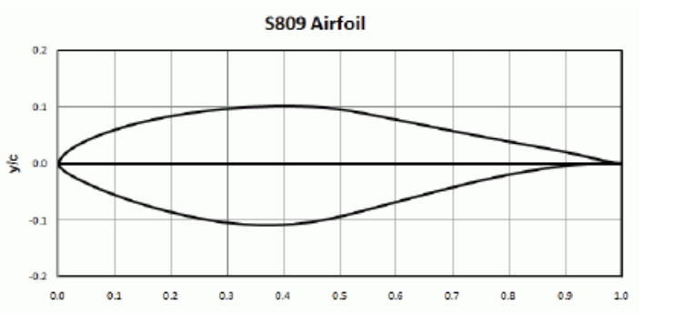 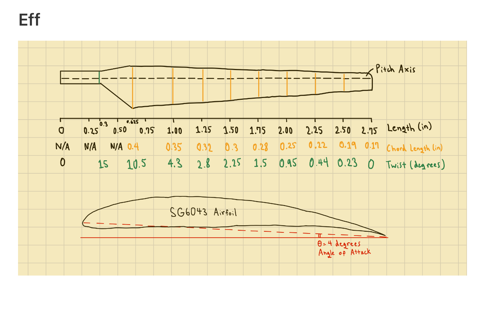
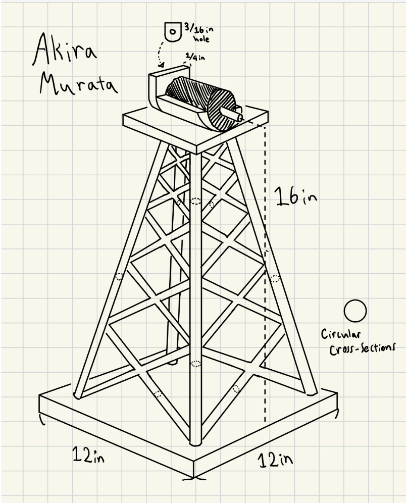 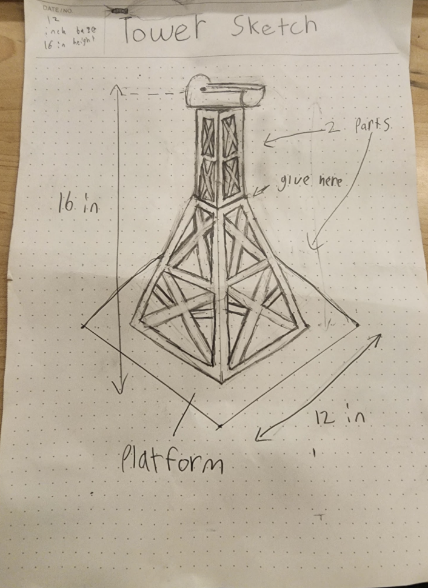
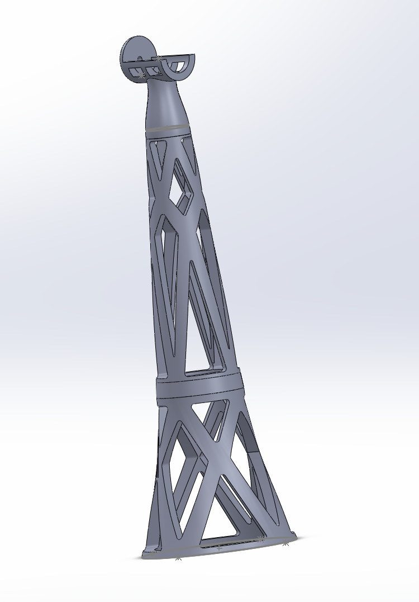 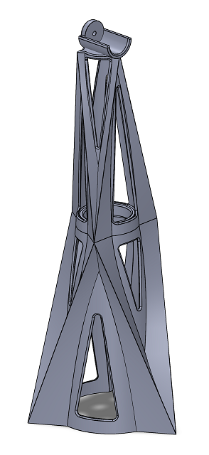
Power testing involves placing the turbine on a secure platform and using a blower to produce steady wind at about 25 mph. We will determine the turbine's peak power output by slowly adjusting the load through a potentiometer and recording voltage and current. Plotting the resulting data and fitting a curve will help confirm maximum performance.
We will mount the turbine for stiffness testing, attach a string and eyebolt to the top support plate, and apply incremental weights. We can quantify the tower's stiffness by measuring deflection at each load, plotting the results, and calculating the slope.
In developing and testing this wind turbine, we stand at the intersection of practical engineering design and the broader ambitions driving the wind energy sector. Through thoughtful blade geometry, careful material selection, and precise tuning of blade pitch, our project aims to highlight the delicate balance needed to translate the natural power of moving air into a reliable and sustainable electrical resource. As our tests confirm power output, stiffness, and weight benchmarks, we gain insights that mirror those guiding large-scale wind installations worldwide. Ultimately, this experience underlines the promise and complexity of wind energy technology, forging a small but meaningful step toward a cleaner, more resilient future.
Section IV: Design Process
Section IV.I: Design Overview:
This project required groups to work collaboratively to design a wind turbine. We had to work and revise to create an effective prototype of a tower section and rotor blades to prepare for real-world testing. Throughout this class, we have acquired the necessary skills to develop a practical design that must comply with the constraints of the final product. Groups diversify their roles and contributions on a strict timeline to effectively create a product, test its effectiveness, and report on their findings. Our group met this challenge head-on, effectively completing our design sprint and implementing the skills and practices we learned through this class.
In engineering, efficiency is only one of the many factors that engineers must consider during the extensive design process when designing something to the scale of a wind turbine. The Power Output of the wind turbine is given by the equation \(P = \frac{1}{2}\text{pA}v^{3}C_{p}\)(3.1), where p = air density (kg/m^3), A = swept area of the wind turbine blades (m^2), v = wind speed (m/s), and Cp is the power coefficient. Thus, to maximize the power output, the swept area of the wind turbine blades and the aerodynamic efficiency of the wind turbine blades should be maximized.
Engineers must consider many other factors to ensure a reliable and safe result; one of the primary considerations is structural integrity. Stability is paramount to achieving a secure design that won't fail under harsh conditions, but this must be balanced with the inversely correlated reduction of material used. Through careful analysis, testing, and prototyping, engineering finds this balance by optimizing the stiffness with respect to material usage/cost. Through the lens of this project, our team chose to emulate this process to the best of our abilities, given the constraints on time and resources. We optimized our tower to increase durability while meeting all requirements set forth by the project.
Our group chose the NACA 4412 turbine blade due to its optimal lift-to-drag ratio among the other blades we considered (Wind Turbine Blade Design). The NACA 4412 blade’s curved upper surface and flat lower surface allows for a more aerodynamic design, similar to other turbine blades. An angle of attack of 5 degrees was chosen, as an article from 2013 published in the International Journal of Innovative Research in Science, Engineering, and Technology demonstrated 5 degrees was optimal for the NACA 4412 blade to generate lift without having a detrimentally steep angle (ijirset). A blade number of 3 was chosen, as a tri-blade design is the industry standard in the wind energy sector due to its efficiency at varying wind speeds and stability (The Effect of the Number of Blades on the Efficiency of A Wind Turbine). Finally, an angle of twist at 15 degrees was chosen as an angle between 10~20 degrees is widely considered the optimal angle to maximize the lift-to-drag ratio in modern wind turbines (New Mexico MESA).
The first step of our design was individual research and concept work, in which we all created a design to diversify our perspectives. After this initial phase, our team got together and reviewed each of the designs and assessed the potential effectiveness of each concept. Following the concept stage, we emulated the standard process by prototyping a complete CAD design of the three concepts we predicted would succeed most. Once we had created the models of our potential design, we used tools such as Finite Element Analysis (FEA) to determine strengths/weaknesses in each prototype. After viewing and analyzing our results, we selected the design that performed the best. We prepared an updated version based on the predicted data from our studies and the culminating strengths of each prototype. Finally, we fabricated a physical prototype of our 3rd stage design to perform physical experimentation so we could compare the real-world data to our predictions based on digital studies; with this data comparison, we could move forward to find where we can improve our design and further reduce our material usage and increase stiffness. Organization was another key feature of our design process; since day one of the project, we utilized a shared drive so that everyone could access our collected sketches, research, drafts, and CAD designs, which supported clear communication within the team. Overall, our group's “design sprint” for this project emulated the real-world design process used in the engineering industry for large-scale projects.
Our group’s final draft tower structure utilized a wide base to minimize displacement caused by force applied at the top of the tower. Each horizontal cross-section is supported by six interwoven triangular trusses designed to culminate in an area of stress concentration. Large sections of the tower were left hollow to meet the volume requirements of the experiment. The tower’s stiffness was further confirmed and refined upon conducting various Finite Element Analysis (FEA) simulations. Our group created a custom material in Solidworks to accurately predict the physical properties of our design. Given our ability to easily print in PLA, it was chosen as the material for our project, with an associated Elastic Modulus of 3500 N/mm^2, Poisson's Ratio of 0.35, and Yield Strength of 40 N/mm^2, among other values, we predicted it would effectively serve our purpose. After performing digital experimentation, the returned values were as follows: Comparison of Stress was Max. 1.852e+06 (N/mm^2), Strain of Max 3.690e-04, displacement of Max. 1.476e-01 (mm), Factor of Safety of Min.22, and a general stiffness of 65.34(N/mm) (General Stiffness formula: S=F(N)[Force]/ 𝛿(mm)[Deflection])(3.2). These values demonstrate that our tower could withstand exceptional force upon the turbine center before structural failure.
Our group worked collaboratively, making data-based decisions to drive our design from the initial concept stage to a test-ready prototype. We implemented design tactics, commonplace practice in the industry, and skills learned in this class to refine a successful prototype. Based on our predicted data, we improved our design until it was ready for physical testing. In the next step, we could compare our physical data to the expected and make adjustments reflecting the data and its correlation to our predictions.
Section IV.II: Sketches:
Below are some initial sketches our group created, which played a critical role in the concept phase of our design process. These sketches were a key part of visualizing our design, allowing us to make first-glance predictions regarding efficiency and stability. Each team member created a sketch for rotors and tower design in the concept phase. We then collaborated to refine these initial concepts further, fostering our pool of diverse perspectives throughout the design process. We worked to integrate successful elements into our final design iteratively.
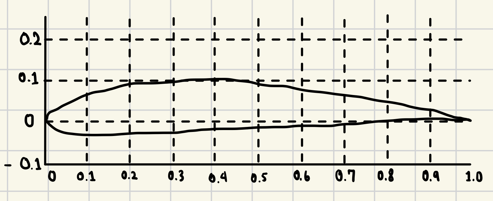
Blade sketch by Akira Murata
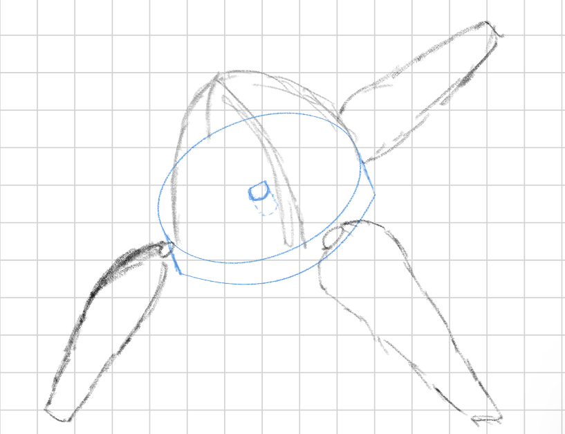
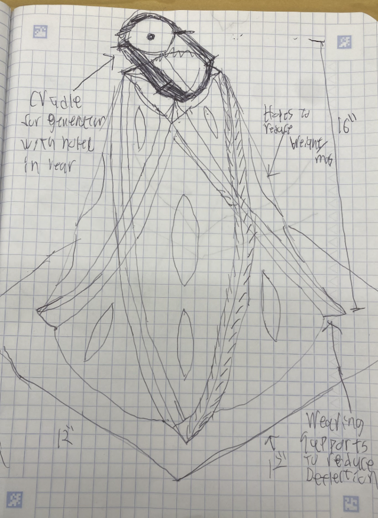 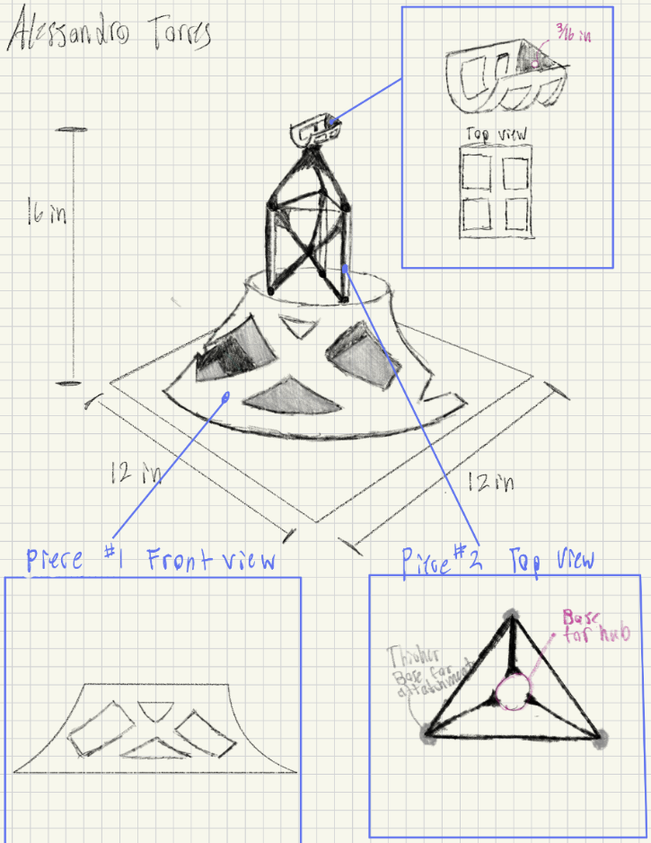
Section IV.III: Tools:
Throughout this class, students have been working towards proficiency with Solidworks and Solidworks-Simulation; thus, naturally, and par requirements of this project were the tools we used to engineer our tower. The three-dimensional modeling capabilities allowed us to flesh out our concepts with ease. Using Finite Element Analysis through Solidworkjs simulations allowed us to assess weak points and reduce areas with excess material. This software is an industry standard and provides a user-friendly interface, which we utilized to complete this project.
Section IV.IV: Simulation Results:
As mentioned previously, our team performed rigorous simulations to assess the integrity of our tower section using Solidworks simulations. The concept of Finite Element Analysis is relatively simple; for large structures such as our tower, which are not geometrically defined, this program breaks them down into many calculable “elements,” each possessing the material properties of the tower. Analyzing the interaction of these elements creates a reasonably accurate prediction for the behavior of the tower as a whole. After performing numerous tests, we optimized and achieved good values in Deflection and Factor of Safety (FOS).
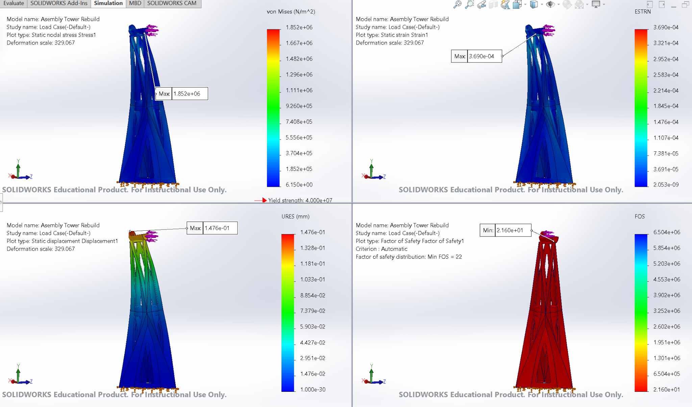
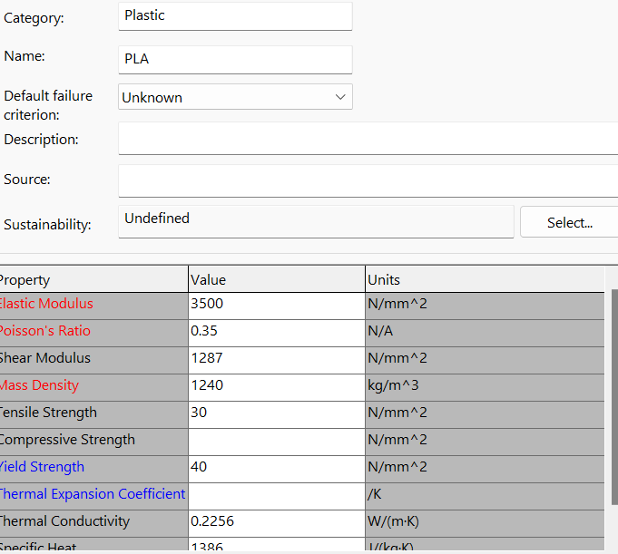
Section IV.V: Load Vs. Deflection Graph:
The key factor we were trying to optimize our tower for was deflection in a single direction. After repeatedly calculating the maximum deflection with 9.8 Newtons(N) of force applied for our drafts, we reached a predicted maximum deflection of 0.15(mm) and a general stiffness of 65.34(N/mm) (General Stiffness formula: S=F(N)[Force]/ 𝛿(mm)[Deflection]). To redouble our prediction's accuracy, we calculated the maximum deflection of 10 data points 0.98N apart, ranging from 0.98N to 9.8N. We found a ~ perfectly linear correlation between the data points, which would be approximately true of real-world tests. This process improved our confidence in our initial predictions regarding the stiffness of our design.
*Interval: [N=0, N=9.8, ΔN = 0.98]
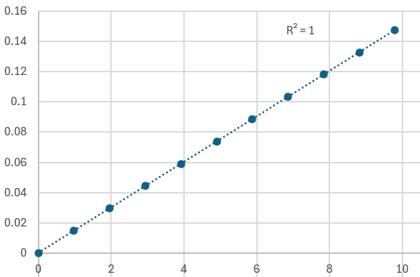
Section IV.VI Mass Properties/Models:
Finally, after many drafts, concepts, and digital prototypes, we achieved a final design we were confident in for our tower section and the rotor blade. We had completed our design sprint and were ready for the physical testing phase. We utilized additive manufacturing, specifically 3D printing PLA, to create a physical prototype of our design. From that point, we moved to testing our prototype’s power, efficiency, and stiffness in the real world.
Final Tower Design by Lachlan Watts-Tobin 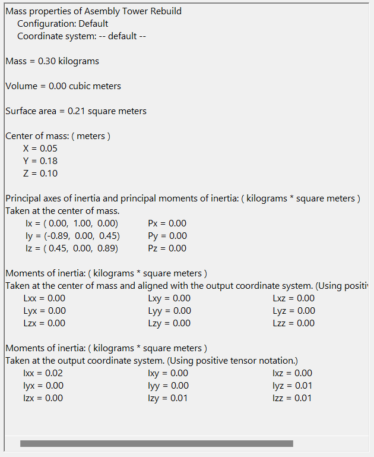
*Volume not shown in assembly. Volume = 16.98in^3
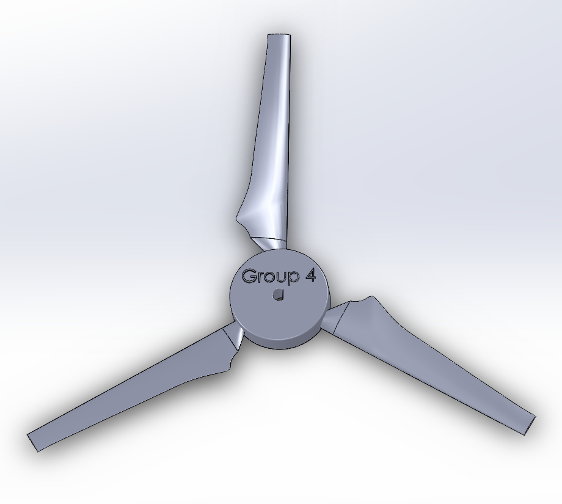 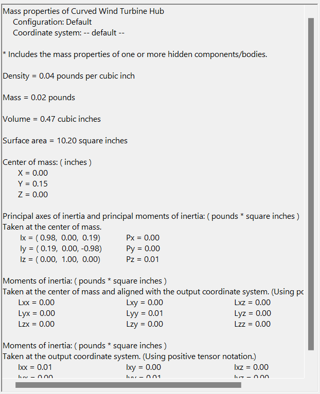
Section V: Testing and Results
Section V.I: Testing Overview
At this point, our group has left the design stage and begun physically testing our finished design. During this process, we will collect real-world data through careful observation, experimentation, and instrumentation. After completing this process, we can reflect on this data and compare it to the predicted results from our extensive Fine Element project analysis. During this stage, we will test three main factors, allowing us to verify our results. First is deflection, which is how much the tower moves as force is applied; after testing this and confirming the weight, we can accurately calculate the Stiffness of our Tower. Next are power and voltage, which we can measure by putting a generator in the tower; with these two values acquired, we can give an accurate calculation of the efficiency of our blade. Overall, this process allows us to verify our predictions about the properties of our design, assess our design, and make improvements in future work based on real-world data.
Section V.II: Efficiency Testing Procedure
The overall efficiency of the rotor blades is measured by the power it can generate at a fixed 25 mph airstream directly facing the turbine's frontal profile. An anemometer was used to measure the current’s velocity by placing it in front of the turbine blades and adjusting the distance of the air blower to get a precise wind speed of 25 mph at the face of the tower.
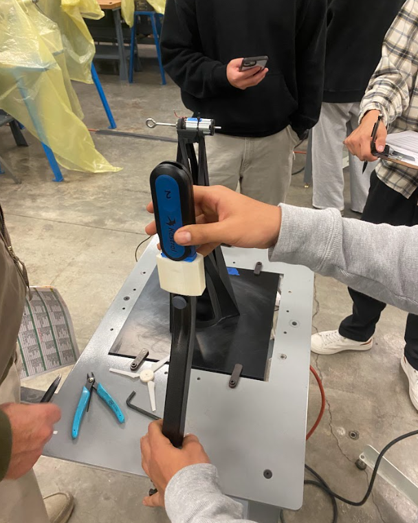
From there, the motor is connected to the load box (which is the instrument providing data for power (mW ), voltage (V), and current (mA)) and a generator attached to our rotor blades to test these values. As the potentiometer nobs are turned counterclockwise, the rotor's resistance increases. As we found, this increased resistance correlates with an increase in current. The nobs were turned in small increments.
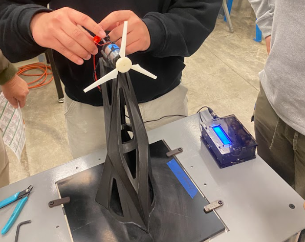
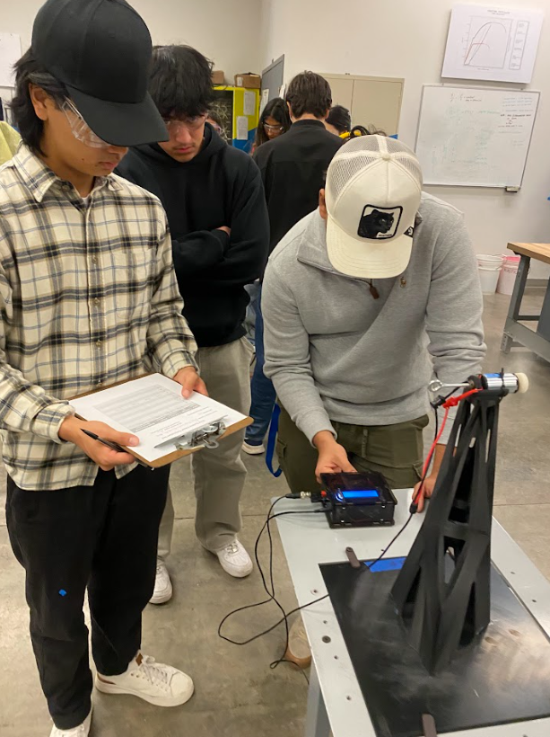
Throughout our testing, the power (mW ), voltage (V), and current (mA) of our blades were recorded at each significant interval. Extreme outliers were removed from the data sets.
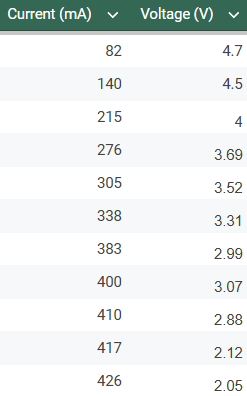
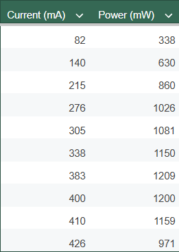
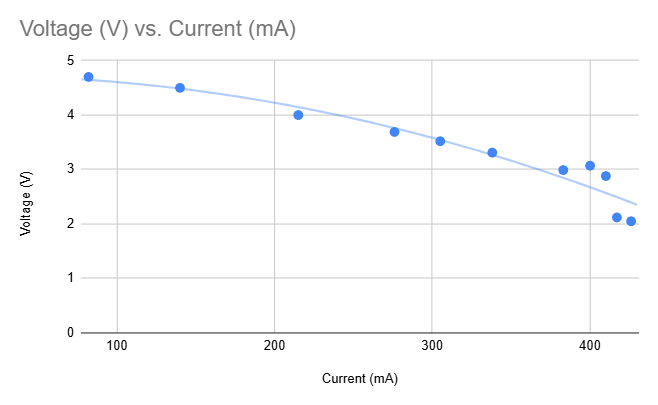
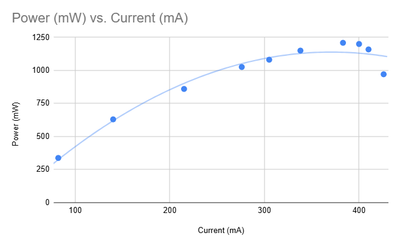
Peak power: 1.209 W
Section V.III: Stiffness Testing Procedure
An eyebolt is secured to the back section of the generator cradle while the generator itself is removed. A string is attached to the bolt and pulled horizontally through a pulley system. Small weights are connected to the string in increments of 100g and end at 1000g. A dial indicator is positioned to the back and pressed against a spacer. The dial indicator is zeroed out to indicate its position with 0 grams of weight. As weight is added, the dial indicator records the distance the turbine deflects from that position. Displacement is recorded at each interval of 100g.
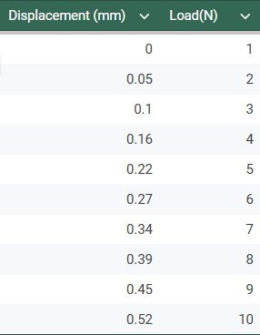
Stiffness: 17.3 N/mm
Correlation Factor: \(R^{2} = 0.999\ \)
Total Weight: 1198.1g
Accurate Weight = (Total Weight - 895g): 303.1g
Section V.IV: Results & Calculating Efficiency/Stiffness
Efficiency is calculated by comparing theoretical power and experimental power. Theoretical power was calculated using \({P_{\text{wind}}}_{} = \frac{1}{2}\rho Av^{3}\) a velocity of 25 mph and a blade diameter of 5.8 inches, which was 10.85 W. According to our tables, the peak power was 1.209 W, meaning our turbine was 11.11% efficient. \(\frac{1.209}{10.85} \approx 0.1111\)
Stiffness is a more straightforward equation and can be derived by comparing the force applied to the deflection. This is done through the quotient of the Force applied in Newtons and the measured deflection in millimeters. Given that our maximum deflection was 0.52 millimeters when 9.8 Newtons of force were used, we can calculate our stiffness as 9.8N/0.52mm = 17.7(N)(mm^-1).
Given these results, there is still much room for improvement and optimization within the scope of our design. While our blade far exceeded the required output in terms of Power(Watts), our design had an efficiency of 11.11%, which is far lower than the typical range of efficiency among wind turbines in the US (~37%) (University of Michigan). Concerning the stiffness of our tower, our experimental maximum deflection far exceeded our predicted maximum deflection; consequential, our experimental stiffness was 26.4%(17.3/65.34) of our predicted stiffness. While our design thoroughly exceeded requirements regarding stiffness, it is clear that we need to revisit our predictive load cases and calculations and investigate the manufacturing process to account for this error.
In summary, through careful experimentation, we created a successful wind turbine design that exceeded the requirements. Given this data, future work can improve our design and optimize its weight, stiffness, and efficiency. Our team learned a great deal about experimentation through this process, and it will be able to more effectively predict and further optimize the characteristics of our future designs.
Section V.V: CAD Drawings
Below are pictures of our final designs, including a drawing and an exploded view of the tower sections we used in the deflection test. These visuals accurately represent the precision and accuracy that our group prioritized in the design process. This also showcases the strong connection between the upper and lower sections of the tower, which our team designed to ensure a rigid connection.
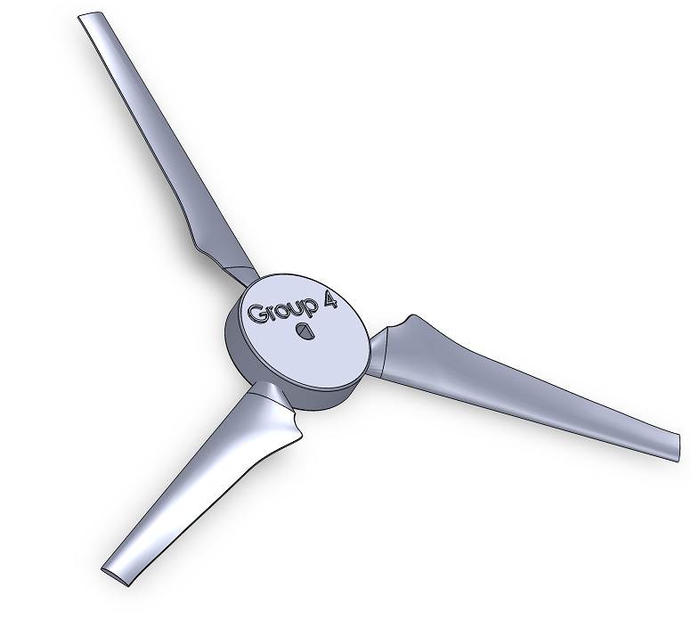 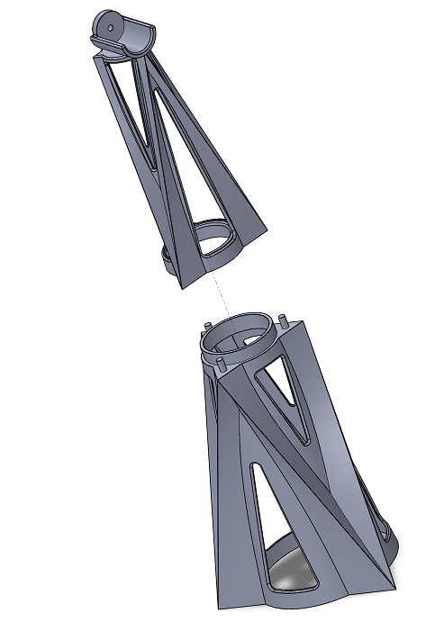
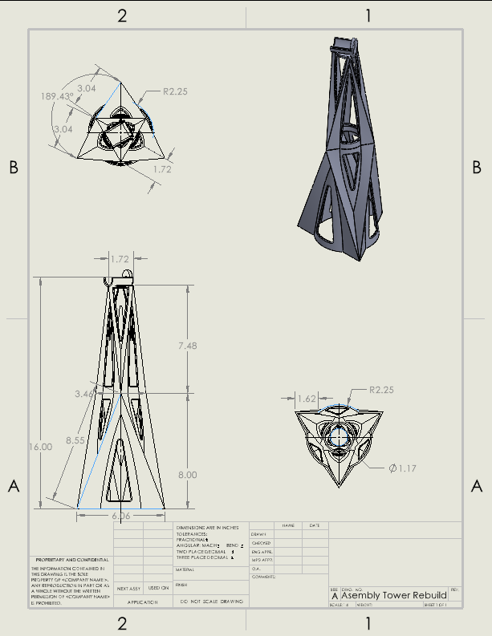
Section VI: Conclusions
This project successfully demonstrated the possibility of designing and fabricating a wind turbine using modern engineering tools. We honed our SolidWorks skills throughout the semester, and we were able to use CAD models and 3D printing to satisfy testing procedures. During testing, the turbine generated a peak power output of 1.209 W, exhibited a stiffness of 17.3 N/mm, and weighed 303.1 g, surpassing the structural and power benchmarks set forth for the project.
Through this process, our team gained a deeper understanding of the interplay between aerodynamic efficiency and structural stability in wind turbine design. With the use of the NACA 4412 blade profile, a tri-blade configuration and angle of attack and twist were key factors in achieving the turbine’s performance. The project also underscored the importance of collaboration and the introduction to engineering, where we computed an analysis of an object's efficiency with experimental testing, mirroring real-world engineering practices.
However, our turbine's efficiency, calculated at 11.11%, falls short of the ~37% efficiency typical of modern full-scale wind turbines. This highlights opportunities for future improvements, such as refining blade geometry - perhaps a different blade design - or enhancing the blades' characteristics. While our design performed well under the constraints of this project, these enhancements could bridge the gap between prototype and industry standards, aligning with the broader goal of advancing sustainable energy technologies.
Overall, this project fulfilled its objectives and provided a valuable learning experience in renewable energy and engineering design, preparing our team for more complex engineering challenges ahead.
Section VII: Recommendations for Future Work
After revisiting our design process, we have identified some improvements that could bolster its results and overall effectiveness. Increasing load distribution and modifying the blade tips would both improve results. Both of these modifications can be easily implemented for future work.
Increasing the tower-to-platform contact area for future improvements ensures better load distribution from the tower’s top. By spreading the weight over a significantly larger surface, this modification substantially enhances overall structural stability, reduces the likelihood of wobble or tilt, and minimizes tower deflection. This straightforward adjustment improves the turbine’s durability, efficiency, and long-term performance under varying operating conditions.
Blade tip modification is another recommendation for future work. Incorporating blade tip modifications in the blade design - such as winglets or curvature adjustments - can significantly enhance wind turbine blade performance. These modifications reduce the intensity of tip vortices, which are swirling flows that form at the blade tips and cause energy losses(Abdelghany et al., 2023). The blade experiences less induced drag by mitigating these vortices, increasing its overall aerodynamic efficiency. The improved airflow distribution along the blade also leads to more uniform loading, potentially resulting in longer blade life and reduced maintenance costs. In addition, refined tip designs can contribute to quieter turbine operation, as smoother airflow reduces noise generated by turbulent wake regions.
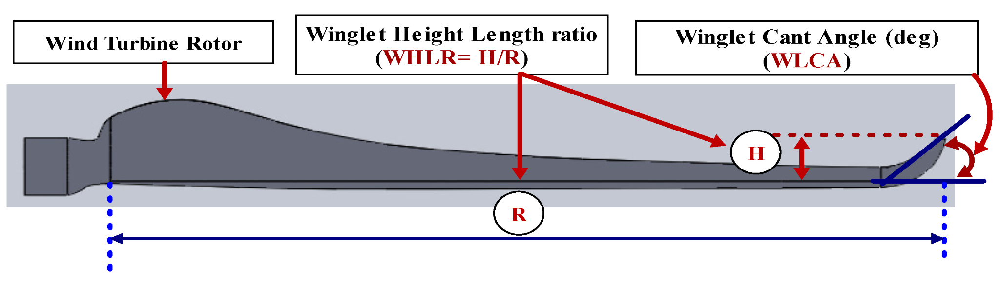
Section VIII: References
Batu, T., Lemu, H. G., Negash, B., Beyene, E., Tirfe, D., Hailemichael, E., & Alemneh, S. (2024). Optimal airfoil selection for small horizontal axis wind turbine blades: A multi-criteria approach. Advances in Mechanical and Materials Engineering, 41, 57-68. https://doi.org/10.7862/rm.2024.6
Abdelghany, E. S., Sarhan, H. H., Alahmadi, R., & Farghaly, M. B. (2023). Study the Effect of Winglet Height Length on the Aerodynamic Performance of Horizontal Axis Wind Turbines Using Computational Investigation. Energies, 16(13), 5138. https://doi.org/10.3390/en16135138
Adeyeye, Kehinde Adeseye, et al. “The Effect of the Number of Blades on the Efficiency of a Wind Turbine.” IOP Conference Series Earth and Environmental Science, vol. 801, no. 1, June 2021, p. 012020. https://doi.org/10.1088/1755-1315/801/1/012020.
Administrator. “Wind Turbine Blade Design, Flat, Bent or Curved.” Alternative Energy Tutorials, www.alternative-energy-tutorials.com/wind-energy/wind-turbine-blade-design.html.
“Wind Energy Factsheet.” Center for Sustainable Systems, css.umich.edu/publications/factsheets/energy/wind-energy-factsheet#:~:text=The%20theoretical%20maximum%20efficiency%20of,passes%20through%20the%20rotor%20area.
https://www.nmmesa.org/wp-content/uploads/2019/10/Aerodynamics-of-Wind-Turbine-Blades.pdf
https://iopscience.iop.org/article/10.1088/1755-1315/801/1/012020/pdf#:~:text=So%2C%20a%20three%2Dblade%20turbine,and%20minimum%20stress%20%5B9%5D
https://iopscience.iop.org/article/10.1088/1755-1315/801/1/012020/pdf#:~:text=So%2C%20a%20three%2Dblade%20turbine,and%20minimum%20stress%20%5B9%5D
Electricity generation from wind. (2023, April 20). Eia.gov; U.S. Energy Information Administration. https://www.eia.gov/energyexplained/wind/electricity-generation-from-wind.php
Wind Energy Basics | NREL. (2019). Nrel.gov; The National Renewable Energy Laboratory. https://www.nrel.gov/research/re-wind.html
Wind Energy Technologies Office. (2024). How Do Wind Turbines Work? Office of Energy Efficiency and Renewable Energy; U.S. Department of Energy. https://www.energy.gov/eere/wind/how-do-wind-turbines-work
Wind Turbine Design for a Wind Turbine System. (n.d.). Alternative Energy Tutorials. https://www.alternative-energy-tutorials.com/wind-energy/wind-turbine-design.html